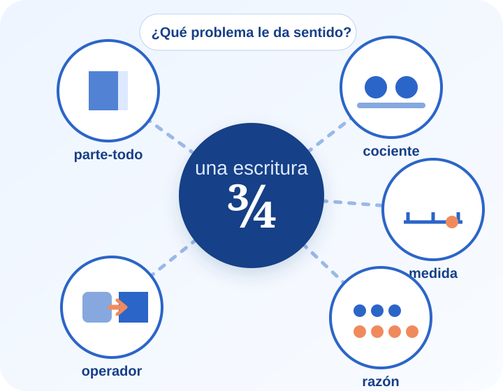
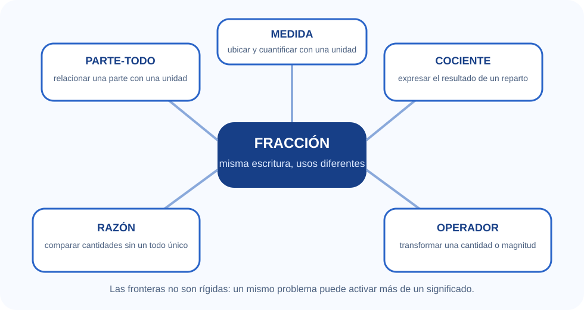
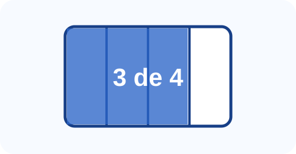
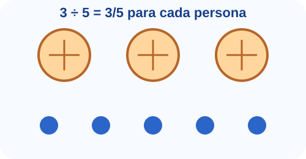
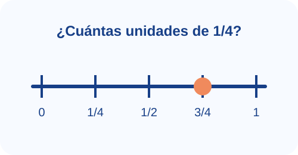
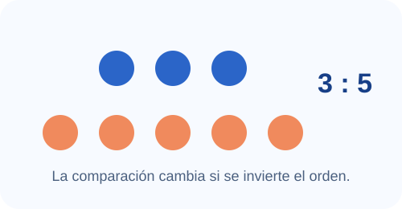
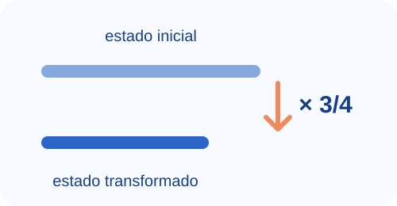
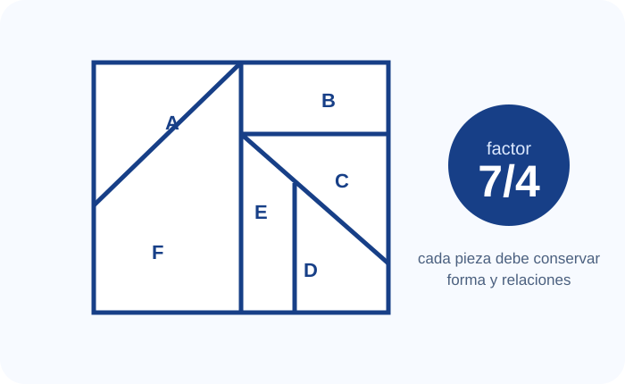
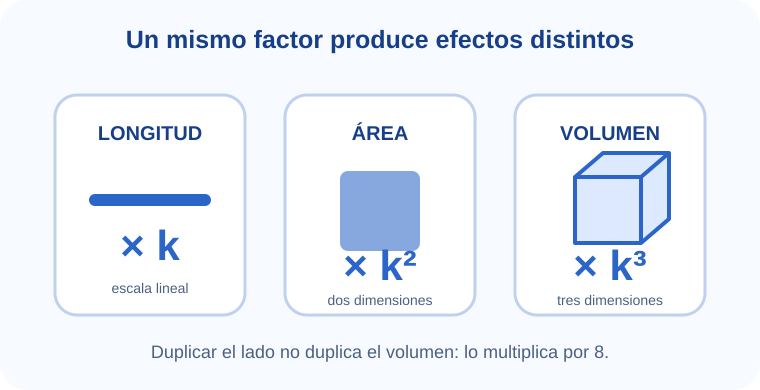

Problematizar
Reconocer que los errores no son azarosos: pueden expresar conocimientos anteriores que resultan productivos en un dominio y limitados en otro.
Actividad matemática como asunto de enseñanza · P. U. en Matemática · UNCo
Estudiar los números racionales para enseñar: una experiencia por etapas que combina problemas, lectura teórica, análisis de respuestas de inteligencia artificial y producción de argumentos.
¿Qué tiene que ocurrir para que a/b deje de ser una regla escrita y se convierta en una herramienta para repartir, medir, comparar y transformar?
El avance se guarda únicamente en este navegador. Las etapas se habilitan con códigos entregados por el profesor.

Antes de abrir el mapa
La propuesta parte de una tensión: quienes estudian para ser profesores ya saben operar con fracciones, pero ese dominio puede ocultar la variedad de problemas, representaciones y decisiones didácticas que constituyen al número racional.
Reconocer que los errores no son azarosos: pueden expresar conocimientos anteriores que resultan productivos en un dominio y limitados en otro.
Usar la respuesta de una IA como borrador para discutir qué significados privilegia, qué reduce y qué dimensión didáctica deja fuera.
Construir explicaciones, anticipar procedimientos y tomar decisiones de enseñanza, en lugar de limitarse a repetir definiciones o algoritmos.
Cuatro etapas obligatorias · recorridos internos no lineales
Dentro de cada etapa podés elegir el orden de los recursos. Para abrir una nueva etapa, primero completá la anterior y luego ingresá el código que entrega el profesor.
Bloqueado
¿Una tabla ordenada alcanza para comprender la complejidad de una fracción?
Bloqueado
¿Qué cambia cuando cambia el problema, la unidad o la relación entre cantidades?
Bloqueado
¿Por qué un mismo factor no produce el mismo efecto en longitudes, áreas y volúmenes?
Bloqueado
¿Qué decisiones permiten que los estudiantes asuman responsabilidad sobre sus respuestas?
Etapa 1 · Producción inicial y sospecha
La consigna propone solicitar a una IA una tabla con cinco significados de la fracción y luego confrontarla con bibliografía. En esta etapa, la IA no funciona como autoridad: produce un objeto para analizar.
Paráfrasis de la consigna AMAE y de los criterios de confrontación teóricaEl audio introduce por qué una misma escritura puede organizar situaciones diferentes.
Una misma escritura fraccionaria puede organizar problemas muy diferentes: relacionar una parte con una unidad, expresar un reparto, ubicar una medida, comparar cantidades o transformar una magnitud. Por eso, la respuesta de una IA es un punto de partida que debe interrogarse.
Marcá los componentes que querés exigir y generá una versión para copiar. Usa lo generado acá como base, modiicala como quieras.
Podés abrirlas en cualquier orden.
La fluidez del texto no garantiza que el contenido esté bien delimitado. Una respuesta puede nombrar los cinco significados y, sin embargo, reducirlos a definiciones intercambiables, proponer siempre el mismo tipo de dibujo o no distinguir entre descripción de una relación y acción sobre una cantidad.
Las tablas favorecen la comparación, pero pueden dar la impresión de que cada significado es una caja cerrada. Los materiales analizados insisten en que la comprensión se construye a largo plazo, mediante situaciones diversas y relaciones entre interpretaciones.
Paráfrasis de Llinares y Sánchez; Freudenthal; Vergnaud.
No basta con describir el significado matemático. También hay que anticipar qué conocimientos previos pueden sostener una estrategia, dónde dejan de funcionar, qué representaciones favorecen una discusión y qué intervenciones permiten convertir una respuesta en una explicación.
Paráfrasis de Vergnaud; Itzcovich y colaboradores; Cedrón.
Se guarda automáticamente en este dispositivo.
Etapa 2 · Núcleo principal
Los cinco significados no forman una lista de sinónimos. Cada uno pone en primer plano una clase de situaciones, una relación y determinadas formas de representar. Las fronteras, sin embargo, son porosas: un reparto puede producir un cociente que luego se ubica como medida, y una escala puede leerse como razón y como operador.
Síntesis basada en Freudenthal; Llinares y Sánchez; Itzcovich y colaboradores
Elegí cualquier tarjeta. Para completar la etapa, explorá al menos cuatro significados y realizá el laboratorio de análisis de IA.

PARTE-TODO
La escritura 3/4 puede indicar que se consideran tres partes de una unidad dividida en cuatro partes equivalentes. El significado depende de identificar con claridad cuál es el todo; contar marcas sin reconstruir la unidad puede producir respuestas como 3/12 en un reparto de tres chocolates.
Regiones o colecciones particionadas, comparación de una parte con el total, reconstrucción de la unidad.
Es una entrada potente, pero insuficiente si queda como único modelo. Las fracciones mayores que uno, las razones parte-parte o la ubicación en la recta exigen reorganizar esa imagen.
Paráfrasis de Itzcovich y colaboradores; Llinares y Sánchez; Balladore.

COCIENTE
En el reparto equitativo de tres unidades entre cinco personas, 3/5 es la cantidad que recibe cada una. La fracción no describe solamente partes ya dibujadas: expresa el resultado de una acción de dividir.
Reparto, medida por iteración de una cantidad, división indicada y ecuaciones del tipo 5 · x = 3.
Los estudiantes pueden saber ejecutar una división y, sin embargo, no interpretar el cociente como cantidad. También deben distinguir entre cuánto recibe cada uno y cuántas porciones se forman.
Paráfrasis de Llinares y Sánchez; Itzcovich y colaboradores.

MEDIDA
3/4 puede pensarse como tres iteraciones de la unidad 1/4. La recta numérica obliga a coordinar el origen, la unidad elegida, la partición y la posición, y permite tratar la fracción como número.
Medición de longitudes, ubicación y comparación en la recta, búsqueda de números entre otros dos.
La recta no es una ilustración automática: hay que construir la unidad, conservar la escala y comprender que entre dos racionales siempre pueden encontrarse otros.
Paráfrasis de Freudenthal; Aportes para la enseñanza; Cedrón.

RAZÓN
La razón 3:5 compara dos cantidades y no requiere que una de ellas sea el todo de la otra. El orden importa: la relación de A con B no es la misma que la de B con A.
Mezclas, escalas, densidades, tasas, porcentajes, comparaciones parte-parte o todo-todo.
Tratar toda razón como una figura sombreada puede ocultar la bidireccionalidad de la comparación y la necesidad de atender simultáneamente a dos magnitudes.
Paráfrasis de Llinares y Sánchez; Freudenthal; Aportes para la enseñanza.

OPERADOR
Aplicar 3/4 a una cantidad produce un nuevo estado: 3/4 de 20, una reducción a escala o una transformación proporcional. El foco está en la relación entre estado inicial y estado final.
Ampliaciones y reducciones, porcentajes, variación relativa, escalas de planos y modelos.
Decir “multiplicar por el numerador y dividir por el denominador” describe una técnica, pero no explica qué transforma, por qué funciona ni cómo se vincula con áreas o volúmenes.
Paráfrasis de Freudenthal; Llinares y Sánchez; actividad AMAE.
Marcá las afirmaciones que deberían ser revisadas y luego pedí la devolución.
Se guarda automáticamente en este dispositivo.
Etapa 3 · Problemas de proporcionalidad y transformación
Las actividades del rompecabezas, la fotografía, los triángulos semejantes y la impresión 3D permiten estudiar el racional como factor de transformación. También hacen visible un obstáculo frecuente: extender de manera indiscriminada relaciones válidas para longitudes a áreas y volúmenes.
Síntesis de las actividades de las páginas 3 a 7 de la consignaMICROVIDEO · 40 s
Miralo como anticipación, no como explicación final. Después contrastá cada afirmación con los problemas.
Si un factor k actúa sobre las longitudes de una figura semejante, el área cambia con k² y el volumen con k³. Por eso, duplicar el lado de un cubo multiplica su volumen por ocho.
Entrá por el que te resulte más provocador.

Cada integrante amplía una pieza, pero el rompecabezas sólo vuelve a armarse si todos usan la misma relación. El factor lineal es 7/4, no “sumar 3” a cada medida.
Para conservar la forma, un único factor debe respetar ambas dimensiones. Los límites son 10/6 y 16/8. El factor máximo es el menor: 5/3.
6 · 5/3 = 10 y 8 · 5/3 = 40/3 ≈ 13,33
¿Conviene dar la fórmula del “mínimo entre cocientes” o dejar que el conflicto aparezca al probar factores? Justificá según el tipo de actividad matemática que querés promover.
Una referencia conocida permite establecer una razón entre la medida en la imagen y la medida real. En el problema de las sombras, la semejanza coordina dos razones: altura/sombra del objeto de referencia y altura/sombra del árbol.

Un cubo de lado 4 cm tiene volumen 64 cm³. Si el lado pasa a 8 cm, el volumen es 512 cm³: ocho veces mayor. Para duplicar el volumen se necesita k³ = 2, de modo que k ≈ 1,26.
Si el filamento es proporcional al volumen y el cubo original usa 96 g, el nuevo cubo de doble volumen usará aproximadamente 192 g.
Datos y preguntas tomados de la actividad AMAE; desarrollo numérico incorporado como apoyo de diseño.
SIMULADOR
Observá cómo cambian simultáneamente las tres magnitudes.
Se guarda automáticamente en este dispositivo.
Etapa 4 · Confrontación y reconstrucción
La confrontación teórica no consiste en reemplazar la tabla de la IA por otra tabla “correcta”. Consiste en reconstruirla con preguntas sobre las situaciones, los obstáculos, las representaciones, las explicaciones y la organización del estudio.
FENOMENOLOGÍA
Permite discutir el paso desde fracciones ligadas a objetos concretos y relaciones hasta la medida, la recta y el número racional. Advierte contra reducir la enseñanza al “fracturador” parte-todo.
Abrir capítulo 5 en una pestaña nueva¿Qué fenómenos quedan fuera si todas las fracciones se presentan con figuras sombreadas?
PRÁCTICAS ESCOLARES
Analiza el sentido de las fracciones, los errores vinculados con la unidad, las operaciones y la entrada de las expresiones decimales en clase.
Abrir selección del capítulo 5 en una pestaña nueva¿Qué conocimientos de los naturales siguen siendo válidos y cuáles deben reorganizarse?
SECUENCIAS
Organiza problemas sobre proporcionalidad, medida, orden, densidad, producto, formulación de conjeturas y validación de propiedades.
Abrir el material en una pestaña nueva¿Qué relaciones entre problemas sostienen una construcción progresiva de Q?
CAMPO CONCEPTUAL
Distingue la forma operatoria del conocimiento —actuar en situación— y la forma predicativa —explicitar propiedades y relaciones—, y sitúa el sentido en la actividad.
Abrir artículo en una pestaña nueva¿Puede un estudiante resolver y no poder explicar? ¿Qué revela cada forma de conocimiento?
ARGUMENTACIÓN
Estudia la producción de explicaciones sobre densidad de Q en la formación docente: representaciones diversas, discusión colectiva y acciones del profesor para sostener los argumentos.
Abrir trabajo en una pestaña nueva¿Cómo se transforma una resolución individual cuando se vuelve objeto de discusión colectiva?
PROCESO DE ESTUDIO
Proponen mirar la enseñanza como ayuda al estudio. El profesor dirige un proceso que articula problemas, técnicas, explicaciones y teorías, sin sustituir la responsabilidad matemática de los estudiantes.
Abrir libro en una pestaña nueva¿Qué cambia cuando la técnica se trabaja como respuesta a un problema y no como fin en sí mismo?
No son “errores a borrar”, sino problemas para discutir.
| Respuesta reducida | Pregunta que abre el estudio | Decisión de enseñanza |
|---|---|---|
| “Fracción es una parte de un todo.” | ¿Qué sucede con 7/4, con una razón 3:5 o con un punto de la recta? | Diversificar situaciones y hacer explícita la unidad. |
| “Multiplicar siempre agranda y dividir achica.” | ¿Qué ocurre al multiplicar por 3/4 o dividir por 1/2? | Confrontar anticipaciones construidas en N con casos de Q. |
| “Entre 3/5 y 4/5 no hay ninguna fracción.” | ¿Qué representa el promedio? ¿Se puede repetir el procedimiento? | Trabajar orden y densidad mediante distintas representaciones. |
| “La regla da el resultado, por eso explica.” | ¿Qué relaciones justifican el procedimiento y en qué problemas resulta pertinente? | Hacer circular explicaciones y discutir su alcance. |
Una posible reconstrucción de la actividad.
Esta secuencia es una decisión de diseño inspirada en la estructura del proceso de estudio presentada por Chevallard, Bosch y Gascón; no reproduce literalmente sus “momentos del estudio”.
PAUSA REFLEXIVA
El audio es una pieza instrumental original, creada para esta cápsula. Usalo como intervalo antes de escribir.
¿Qué parte de tu enseñanza habitual privilegia la ejecución por encima de la explicación?
Se guarda automáticamente en este dispositivo.
Síntesis interactiva · tres situaciones
COCIENTE Y UNIDAD
La finalidad no es acumular aciertos, sino reconocer qué relación organiza cada situación y qué razonamiento permite justificarla.
Guardado local
Las notas se conservan sólo en este dispositivo y en este navegador. No se envían a ningún servidor.
Todavía no escribiste esta nota.
Todavía no escribiste esta nota.
Todavía no escribiste esta nota.
Todavía no escribiste esta nota.
Se guarda automáticamente en este dispositivo.
Fuentes proporcionadas por el docente
Los desarrollos teóricos de la cápsula son paráfrasis. Los fragmentos textuales breves aparecen entre comillas y se identifican como enunciados de la actividad.
El archivo “Documento_completo.pdf” y el archivo con el título de Cedrón contienen el mismo trabajo; se analizaron como un único material.
Propuesta para la asignatura Actividad matemática como asunto de enseñanza (AMAE), Profesorado Universitario en Matemática, Universidad Nacional del Comahue.
Diseño pedagógico a partir de la actividad y los materiales proporcionados por el profesor.
La inteligencia artificial generativa fue utilizada como apoyo para analizar, organizar y programar esta cápsula. La selección conceptual, las consignas y las decisiones didácticas deben ser revisadas por el equipo docente antes de su implementación. No se incorporaron autores ni referencias externos a los archivos proporcionados.
Las voces de los audios son sintéticas y el recurso musical es una composición instrumental generada específicamente para el proyecto.